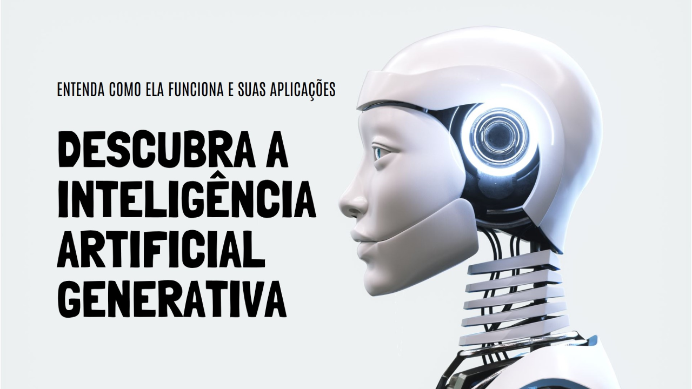
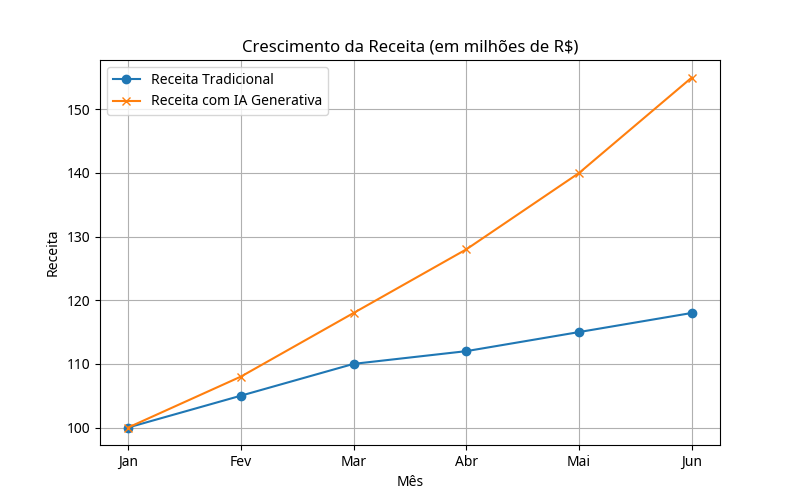
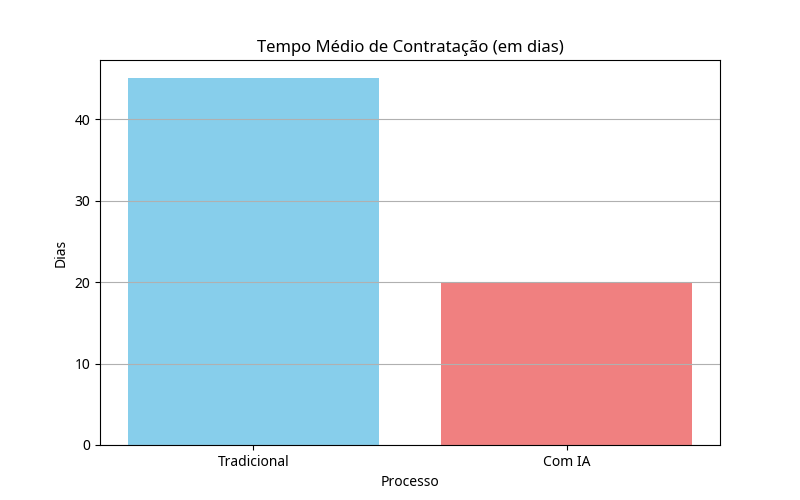
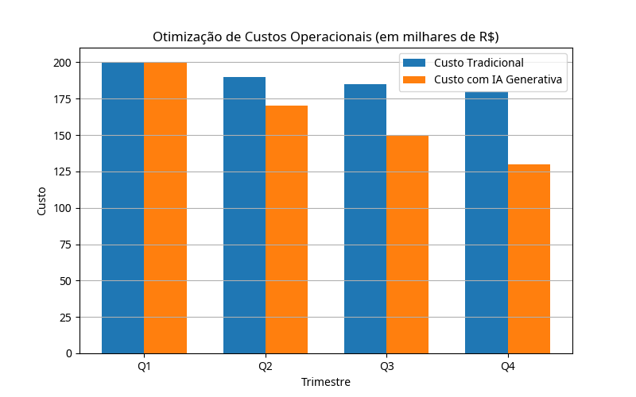
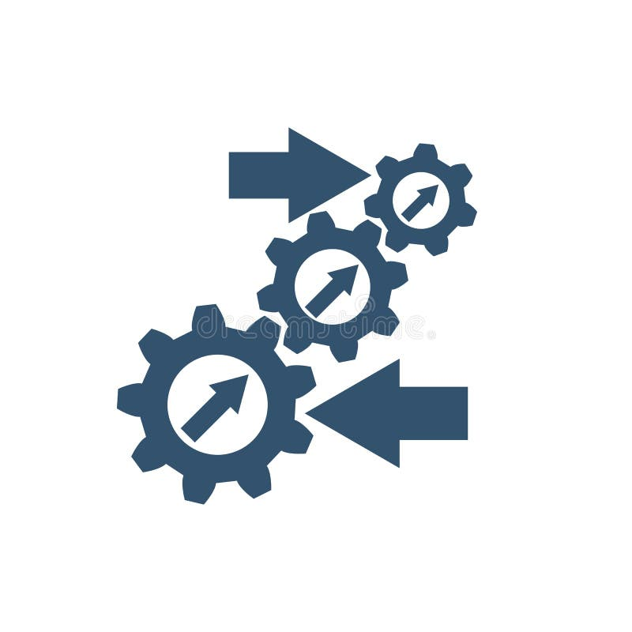
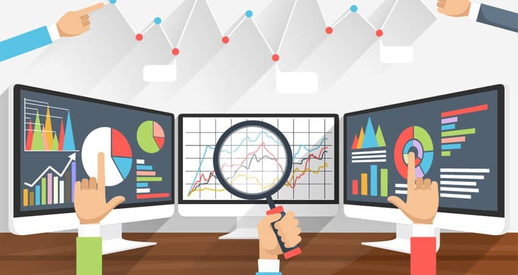

Impacto da IA Generativa nas Métricas de Negócio
Introdução
A Inteligência Artificial Generativa (IA Gen) representa uma das mais significativas inovações tecnológicas da última década, com o potencial de transformar fundamentalmente a maneira como as empresas operam e geram valor. Diferente das IAs tradicionais, que se concentram em análise e reconhecimento de padrões, a IA Generativa é capaz de criar conteúdo original, como textos, imagens, códigos e até mesmo novas ideias, a partir de dados existentes. Este report executivo explora o impacto multifacetado da IA Generativa em três áreas-chave de negócio: Finanças, Recursos Humanos e Operações, além de discutir a importância de uma integração estratégica para maximizar seus benefícios e mitigar riscos.
A adoção da IA Generativa não é apenas uma questão de eficiência operacional, mas uma alavanca estratégica para a inovação, competitividade e crescimento sustentável. Ao automatizar tarefas complexas, gerar insights profundos e personalizar interações em escala, a IA Gen está redefinindo os limites da produtividade e da criatividade empresarial. No entanto, sua implementação bem-sucedida exige uma compreensão clara de seus desafios, como a gestão de vieses, a proteção da propriedade intelectual e a necessidade de supervisão humana contínua. Este documento visa fornecer uma visão abrangente e prática sobre como as organizações podem aproveitar o poder da IA Generativa para impulsionar suas métricas de negócio e preparar-se para o futuro.
 Seção 1 – Finanças
Seção 1 – Finanças
A IA Generativa está revolucionando o setor financeiro, oferecendo novas formas de otimizar processos, aprimorar a tomada de decisões e personalizar o atendimento ao cliente. Sua capacidade de gerar e analisar grandes volumes de dados não estruturados, como relatórios, contratos e comunicações, permite uma automação sem precedentes e a extração de insights valiosos.
Automação de Relatórios e Análises
Um dos impactos mais imediatos da IA Generativa em finanças é a automação na criação de relatórios de crédito, risco e compliance. Modelos de IA podem analisar indicadores financeiros complexos e gerar análises escritas detalhadas em minutos, uma tarefa que antes levava dias para analistas humanos. Isso não só aumenta a eficiência operacional, mas também permite respostas mais rápidas a eventos críticos e a personalização de relatórios para diferentes públicos.
Atendimento ao Cliente Personalizado
No relacionamento com o cliente, a IA Generativa permite a criação de sistemas que compreendem o contexto das solicitações, interpretam o histórico de interações e geram respostas humanizadas e úteis. Isso eleva a experiência do cliente, oferecendo suporte personalizado e eficiente, desde a renegociação de dívidas até o aconselhamento financeiro básico.
Análise de Dados e Decisões Estratégicas
A IA Generativa atua como uma ponte entre a complexidade dos dados financeiros e a tomada de decisões estratégicas. Ela democratiza o acesso à informação, permitindo que gestores e equipes não técnicas obtenham respostas acionáveis a partir de dados brutos. Isso amplia o poder analítico da empresa, transformando dados em inteligência de negócio e impulsionando o crescimento.
Seção 2 – Recursos Humanos
No campo de Recursos Humanos, a IA Generativa está redefinindo as práticas de gestão de talentos, desde o recrutamento até o desenvolvimento e engajamento dos colaboradores. Sua aplicação resulta em processos mais eficientes, decisões mais embasadas e uma experiência aprimorada para candidatos e funcionários.
Recrutamento e Seleção Aprimorados
A IA Generativa otimiza a identificação de talentos ao analisar currículos e perfis de candidatos em detalhes, identificando habilidades e experiências relevantes de forma rápida e imparcial. A triagem automatizada filtra candidatos com base em critérios predefinidos, reduzindo vieses e agilizando o processo. Além disso, a comunicação personalizada com os candidatos, desde convites a feedbacks, melhora significativamente a experiência do candidato.
Customização da Experiência do Colaborador
A IA permite a criação de programas de onboarding personalizados, acelerando a integração e aumentando o engajamento de novos colaboradores. O feedback contínuo e personalizado sobre o desempenho, baseado em análise de dados, permite que os colaboradores se desenvolvam de forma mais direcionada. Planos de treinamento e desenvolvimento customizados, alinhados às necessidades e objetivos de carreira, aumentam a eficácia do aprendizado e o engajamento.
Eficiência em Processos de Avaliação
A análise de grandes volumes de dados de avaliações de desempenho pela IA Generativa revela tendências e padrões, auxiliando na identificação de áreas de melhoria e oportunidades de crescimento. A automação de tarefas repetitivas, como coleta de dados e geração de relatórios, libera os profissionais de RH para atividades mais estratégicas. O feedback em tempo real, via chatbots e assistentes virtuais, permite que os funcionários ajustem seu comportamento continuamente.
Seção 3 – Operações
A IA Generativa está se consolidando como um motor de produtividade e eficiência nas operações empresariais. Sua capacidade de otimizar processos, reduzir custos e aprimorar a tomada de decisões está transformando a forma como as empresas gerenciam suas cadeias de valor e interagem com fornecedores e clientes.
Otimização de Processos e Redução de Custos
A IA Generativa otimiza operações ao analisar grandes volumes de dados operacionais, como volumes de negociação, indicadores de mercado e dados de fornecedores, gerando insights para aprimorar a eficiência. Ela permite a transição de tarefas repetitivas para um trabalho mais estratégico, liberando os colaboradores para se concentrarem em atividades de maior valor agregado. Isso resulta em uma significativa redução de custos operacionais e um aumento da produtividade geral.
Gestão da Cadeia de Suprimentos e Logística
Na gestão da cadeia de suprimentos, a IA Generativa pode prever demandas, otimizar rotas de entrega e gerenciar estoques de forma mais eficaz. Ao analisar dados históricos e em tempo real, ela pode identificar gargalos, sugerir melhorias e automatizar a comunicação com fornecedores, garantindo uma cadeia de suprimentos mais resiliente e eficiente.
Manutenção Preditiva e Qualidade
A IA Generativa também contribui para a manutenção preditiva, analisando dados de sensores e equipamentos para prever falhas antes que ocorram, minimizando o tempo de inatividade e os custos de reparo. Além disso, pode monitorar e otimizar a qualidade dos produtos e serviços, identificando desvios e sugerindo ações corretivas em tempo real.
 Seção 4 – Integração Estratégica
A integração bem-sucedida da IA Generativa nas operações de negócio exige uma abordagem estratégica que vá além da simples implementação tecnológica. É fundamental considerar os desafios e riscos, bem como a necessidade de uma liderança adaptável e a colaboração entre humanos e máquinas para maximizar o valor gerado.
Desafios e Mitigação de Riscos
A implementação da IA Generativa apresenta desafios como a gestão de vieses nos modelos, a proteção da propriedade intelectual e a garantia de transparência e explicabilidade. É crucial que as organizações estabeleçam barreiras de proteção e industrializem soluções de IA, mantendo os humanos informados para verificar a precisão dos resultados e resolver quaisquer problemas que surjam. A supervisão humana é essencial para garantir que a IA atue de forma ética e alinhada aos valores da empresa.
Liderança e Adaptação Organizacional
Líderes devem guiar suas organizações com visão e adaptabilidade, promovendo uma cultura que abrace a inovação e a colaboração entre humanos e IA. A mentalidade de pesquisador é fundamental para garantir que a integração da GenAI seja estratégica, centrada no ser humano e adaptável. Isso envolve a capacitação dos colaboradores para trabalhar com a IA, transformando o local de trabalho e permitindo que as equipes se concentrem em tarefas mais significativas e orientadas a valores.
Integração com Iniciativas Prioritárias
Para maximizar o impacto, os copilotos de IA Generativa devem ser integrados às iniciativas prioritárias da empresa. Isso significa que a IA deve ser vista como uma ferramenta para amplificar os esforços existentes e impulsionar o crescimento em áreas-chave do negócio, garantindo que a tecnologia esteja alinhada aos objetivos estratégicos da organização e contribua diretamente para o sucesso a longo prazo.
Conclusão
A Inteligência Artificial Generativa não é apenas uma tendência tecnológica passageira, mas uma força transformadora com o poder de redefinir as métricas de negócio em diversos setores. Em Finanças, ela otimiza a automação de relatórios e personaliza o atendimento ao cliente. Em Recursos Humanos, aprimora o recrutamento, customiza a experiência do colaborador e aumenta a eficiência dos processos de avaliação. Nas Operações, impulsiona a otimização de processos, a redução de custos e a manutenção preditiva.
No entanto, para colher os frutos dessa revolução, as organizações devem adotar uma abordagem estratégica e cuidadosa. É imperativo gerenciar os riscos associados, como vieses e questões de propriedade intelectual, e garantir que a integração da IA seja centrada no ser humano, com supervisão contínua e capacitação dos colaboradores. A liderança deve ser visionária e adaptável, promovendo uma cultura de colaboração entre humanos e máquinas.
Ao integrar a IA Generativa de forma estratégica e alinhada aos objetivos de negócio, as empresas não apenas aumentarão sua produtividade e eficiência, mas também desbloquearão novas oportunidades de inovação e crescimento. O futuro dos negócios será moldado pela capacidade das organizações de abraçar essa tecnologia, transformando o potencial da IA Generativa em valor real e sustentável.